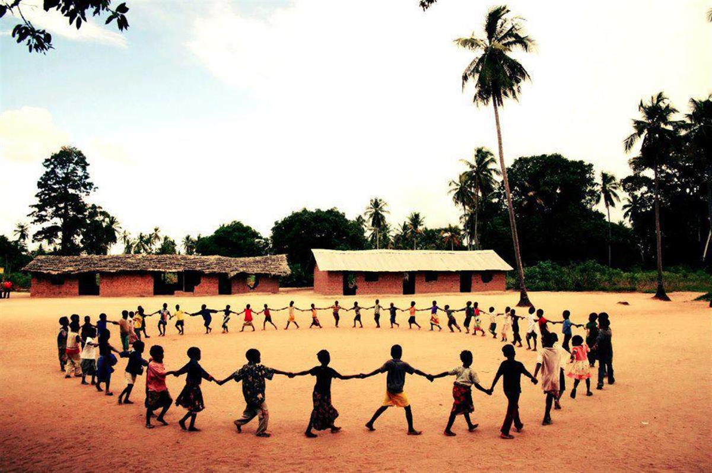
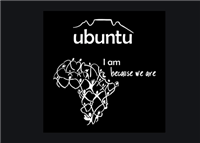

An anthropologist proposed a game to children in an African tribe. He put a basket of fruit near a tree and told the children whoever got there first won the sweet fruits. When he told them to run they all took each others hands and ran together, then sat together enjoying their treats. When he asked them why they had run together like that as one could have had all the fruits for himself they said: 'Ubuntu, how can one of us be happy if all the other ones are sad?'

THE LONGER STORY:
An anthropologist had been studying the habits and customs of this tribe, and when he finished his work, had to wait for transportation that would take him to the airport to return home. He'd always been surrounded by the children of the tribe, so to help pass the time before he left, he proposed a game for the children to play.
He'd bought lots of candy and sweets in the city, so he put everything in a basket with a beautiful ribbon attached. He placed it under a solitary tree, and then he called the kids together. He drew a line on the ground and explained that they should wait behind the line for his signal. And that when he said 'Go!' they should rush over to the basket, and the first to arrive there would win all the candies.
When he said 'Go!' they all unexpectedly held each other's hands and ran off towards the tree as a group. Once there, they simply shared the candy with each other and happily ate it.
The anthropologist was very surprised. He asked them why they had all gone together, especially if the first one to arrive at the tree could have won everything in the basket - all the sweets.
A young girl simply replied: 'How can one of us be happy if all the others are sad?'
The anthropologist was dumbfounded! For months and months he'd been studying the tribe, yet it was only now that he really understood their true essence...

“Africans have a thing called ubuntu. It is about the essence of being human, it is part of the gift that Africa will give the world. It embraces hospitality, caring about others, being willing to go the extra mile for the sake of another. We believe that a person is a person through other persons, that my humanity is caught up, bound up, inextricably, with yours. When I dehumanize you, I inexorably dehumanize myself. The solitary human being is a contradiction in terms. Therefore you seek to work for the common good because your humanity comes into its own in community, in belonging.” -- Archbishop Desmond Tutu
Ubuntu, in the Xhosa culture means: 'I am because we are'
The Africa Peace Journal: The Ubuntu Stratagem.
READ MORE: THE AFRICAN PEACE JOURNAL
SOURCE: THE AFRICAN PEACE JOURNAL